Explore Budapest
A Brief History
Budapest united the towns of Buda, Óbuda, and Pest in 1873 along the Danube. Habsburg rule, 19th-century nation building, and 20th-century upheaval shaped its bridges, parliament, baths, and hillsides. The riverfront combines royal, civic, and commercial architecture across both banks.
Attractions Map
Top Sights & Activities
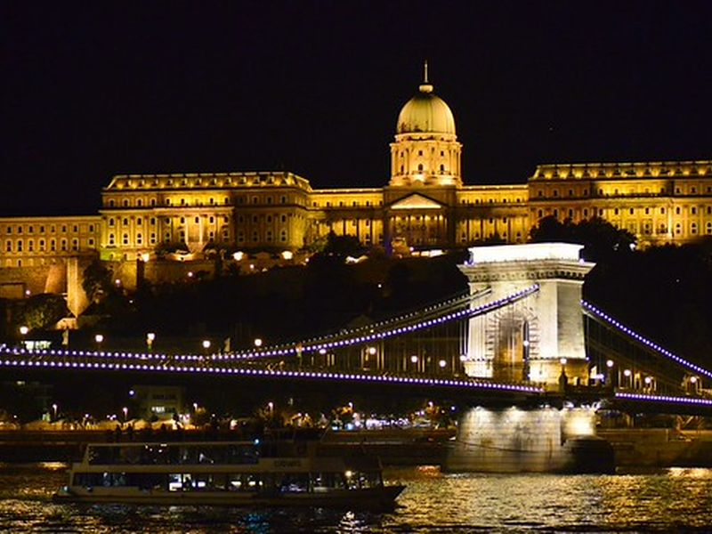
Buda Castle
Buda Castle occupies the plateau above the Danube where Hungarian kings and later Habsburg rulers built and rebuilt a royal residence. The present ensemble includes the National Gallery and History Museum within courtyards and wings from medieval foundations to 19th-century reconstruction.
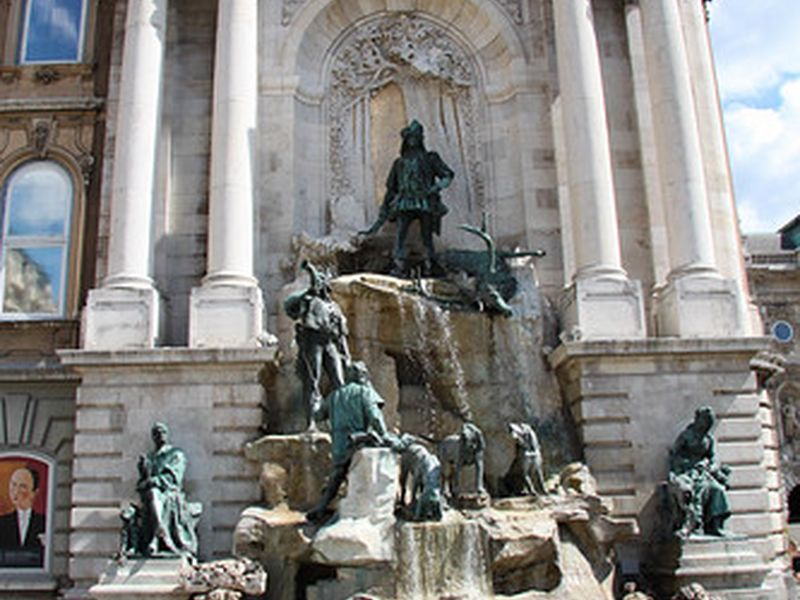
Fountain of King Matthias
The Matthias Fountain stands in the western forecourt of Buda Castle and was completed in 1904 with bronze figures of King Matthias Corvinus and hunters. Neo-Baroque sculpture decorates the terrace above the Danube bend. The fountain forms a ceremonial focal point before the palace entrance.
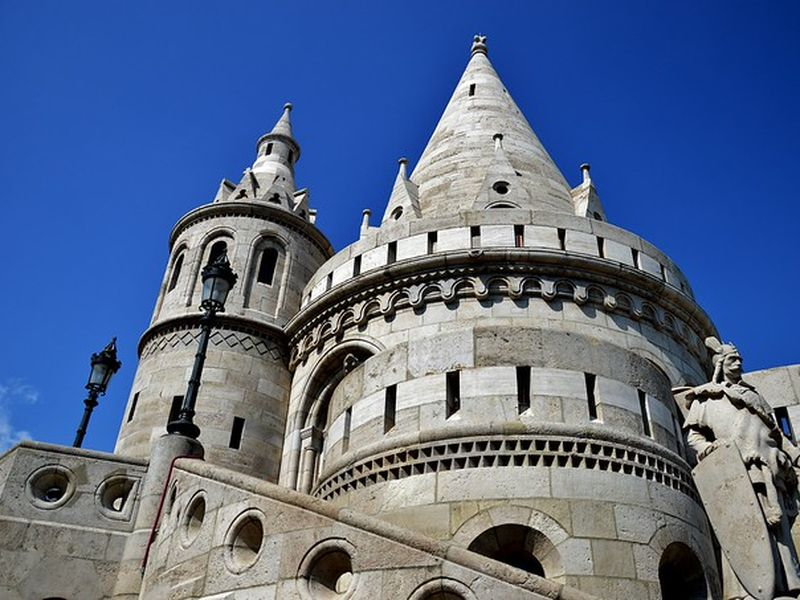
Fisherman's Bastion
Fisherman's Bastion is a Neo-Romanesque terrace on Castle Hill built in the early 20th century beside Matthias Church. Turrets and arcades frame views over the Danube, Parliament, and Pest embankment. The structure commemorates the medieval fishermen's guild that defended this section of walls.
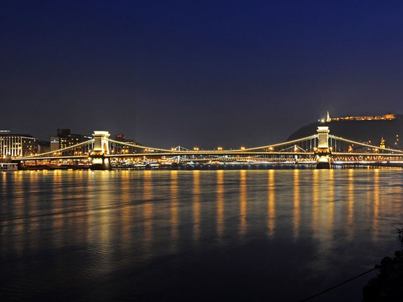
Széchenyi Chain Bridge
The Chain Bridge opened in 1849 as the first permanent crossing between Buda and Pest. Designed by William Tierney Clark and built with Scottish engineering support, its stone lions and suspension chains became symbols of united Budapest. Pedestrians and vehicles share the span above the Danube.
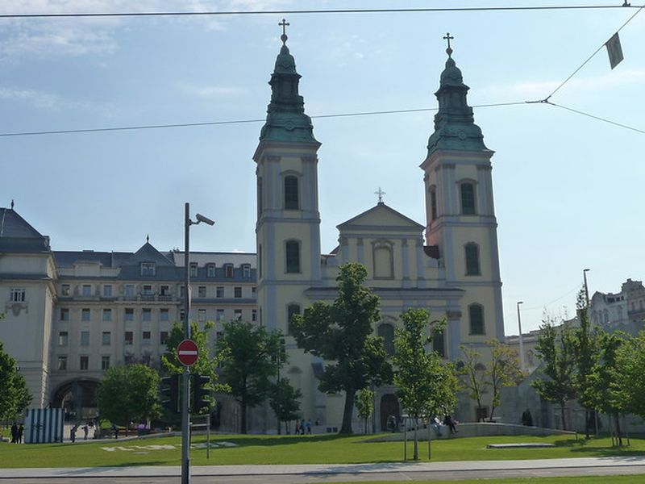
Inner-City Church of the Franciscans
The Inner City Parish Church on Pest's Danube embankment is one of the oldest buildings in central Pest with Romanesquin and Gothic layers. Franciscan friars have served the parish for centuries. The church stands beside the Elizabeth Bridge approach on the riverfront.
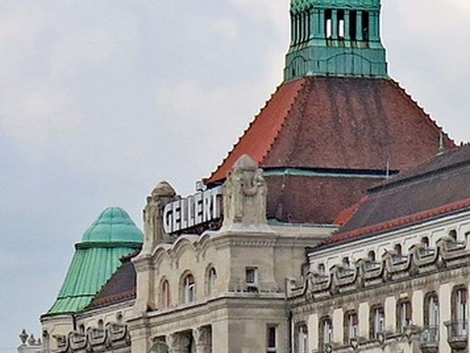
St. Gerard Sagredo Statue
The statue of Saint Gerard stands on the Gellért Hill slope above the Elisabeth Bridge. It commemorates the Italian bishop martyred in the 11th century during the Christianization of Hungary. The monument marks a viewpoint on the climb toward the Citadella.
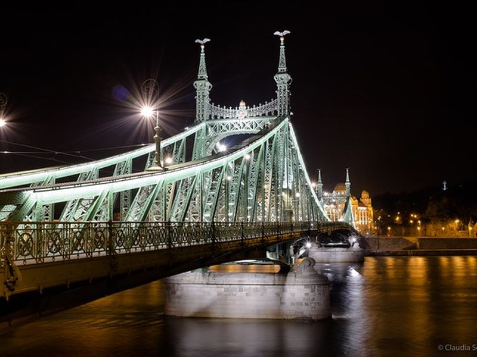
Elisabeth Bridge
Elisabeth Bridge connects Buda and Pest at the narrowest point of the Danube in Budapest. The present white cable-stayed bridge opened in 1964 after wartime destruction of the earlier chain structure. It carries traffic and pedestrians between Gellért Square and the inner city.
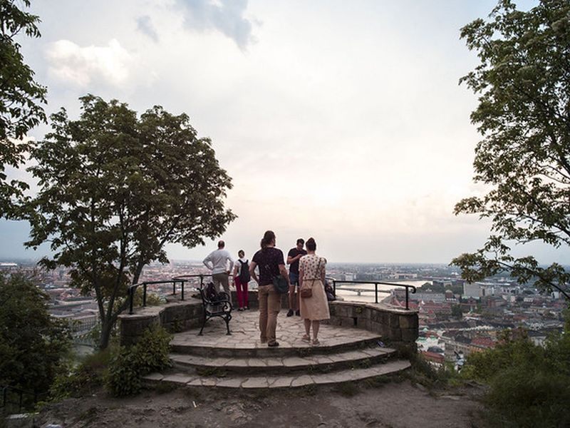
Citadella
The Citadella is a 19th-century fortress on Gellért Hill built after the 1848–49 revolution. Its walls and the Liberty Statue above overlook the Danube and city panorama. The site is reached by paths from the embankment and remains a major viewpoint on the Buda side.
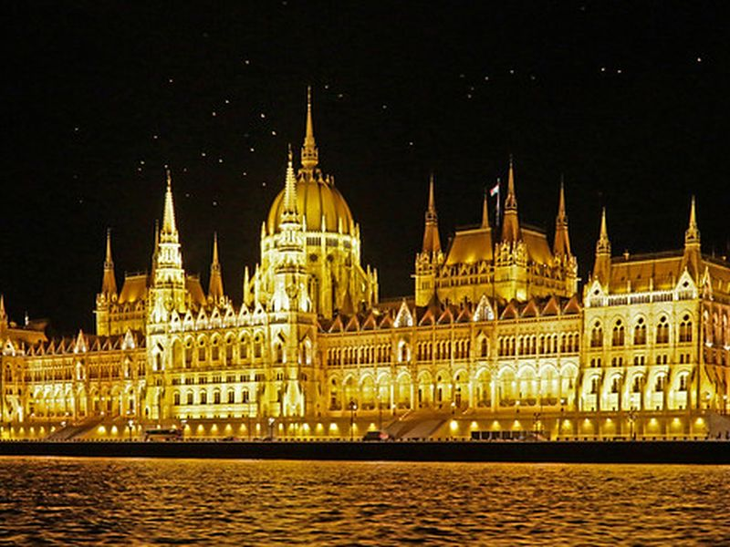
Hungarian Parliament Building
The Hungarian Parliament was completed in 1904 in Neo-Gothic style on the Pest riverbank. It houses the National Assembly and crown jewels of Saint Stephen. Guided tours visit the dome hall and chambers when parliament is not in session.
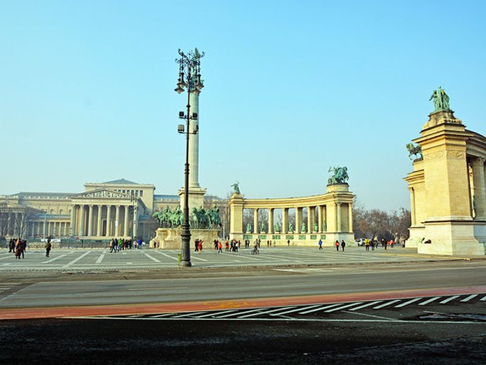
Heroes' Square
Heroes' Square at the end of Andrássy Avenue was laid out for the 1896 millennium celebrations of the Hungarian state. The Millennium Monument and colonnades commemorate chieftains and rulers. The square opens toward City Park and the Museum of Fine Arts.
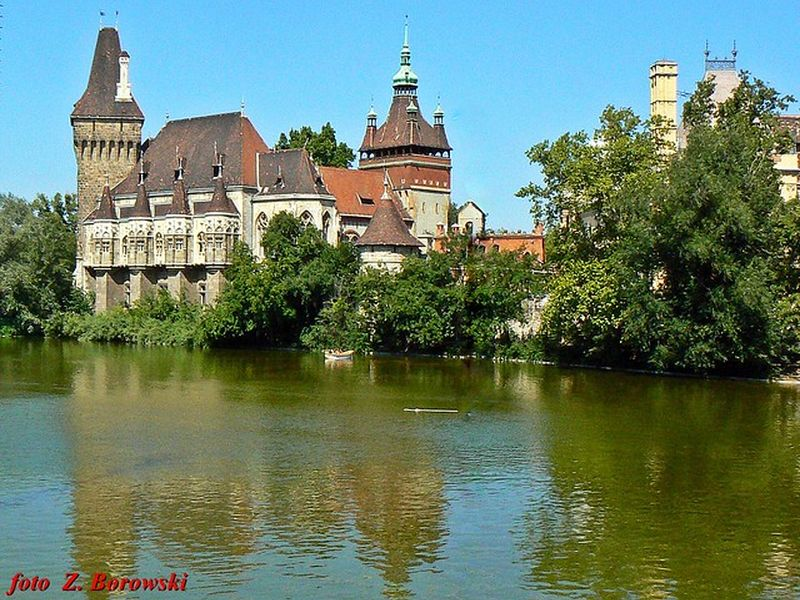
Vajdahunyad Castle
Vajdahunyad Castle in City Park was built in 1896 as a composite of Hungarian architectural styles for the millennium exhibition. Its courtyards and chapel reference Transylvanian and regional landmarks. The Agricultural Museum occupies the main wing within the park.
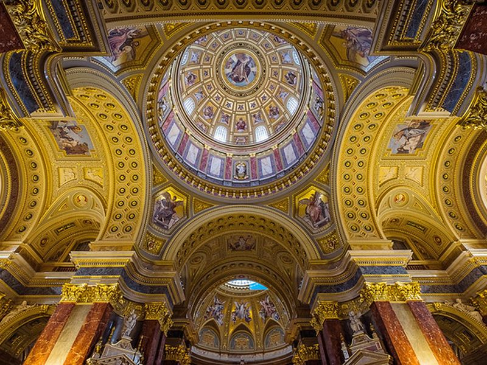
St. Stephen's Basilica
Saint Stephen's Basilica was completed in 1905 and named for Hungary's first king. Its dome and neoclassical interior house the relic of Saint Stephen's right hand. A tower lift and stairs reach a viewing platform above the inner city rooftops.
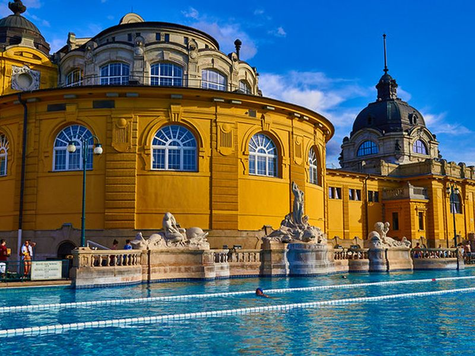
Széchenyi Thermal Bath
Széchenyi Thermal Bath in City Park opened in 1913 in Neo-Baroque style around outdoor and indoor pools fed by thermal springs. Medicinal waters and grand halls reflect Budapest's spa culture under the monarchy. The complex remains one of the largest bathhouses in Europe.
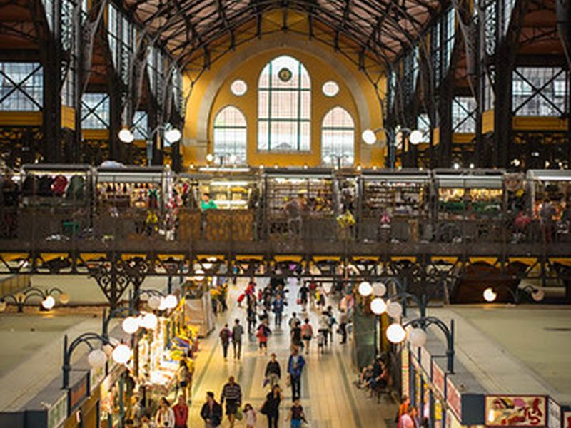
Central Market Hall
The Great Market Hall on Fővám Square was designed by Samu Pecz and opened in 1897 with a steel-framed hall and Zsolnay tile roof. Vendors sell produce, paprika, and prepared foods on three levels near the Liberty Bridge. The building remains a working market and visitor destination.